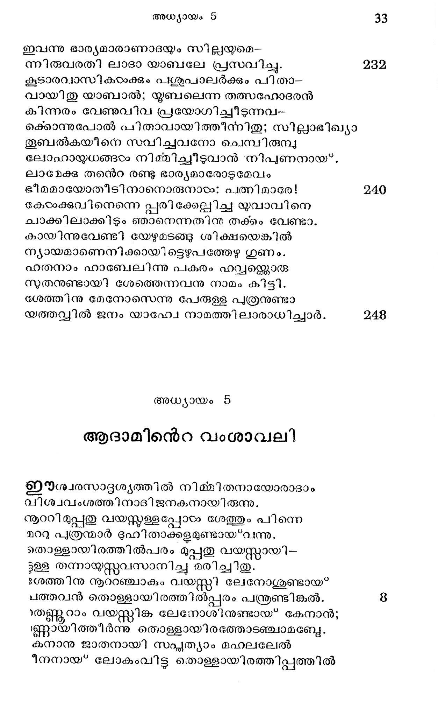
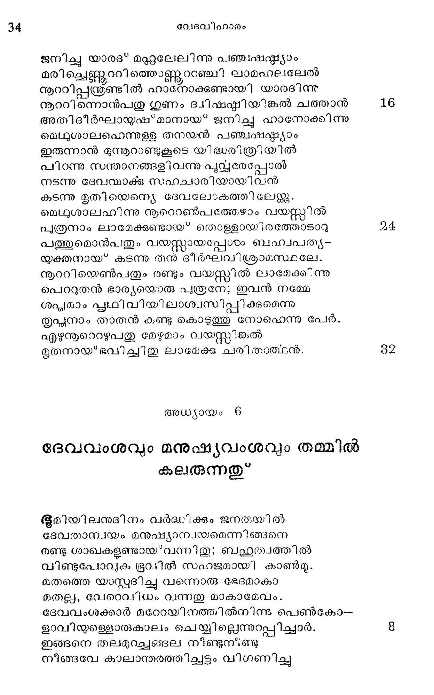

ആദാമിന്െറ വംശാവലി
ഇർശ്വരസാദൃശ്യത്തില് നിമ്മിതനായോരാദാം
വിശ്വവംശത്തിനാദിജനകനായിരുന്നു.
'നആൂററി മുപ്പതു വയസ്തള്ളപ്പോഠം ശേത്തും പിന്നെ
മററു പുത്രന്മാര് ദുഹിതാക്കളമുണ്ടായ*വന്നു.
തൊള്ളായിരത്തില്പരം മുപ്പതു വയസ്സായി--
ള്ള തന്നായ്സ്സവസാനിച്ചു മരിച്ചിതു.
$ശത്തിനു നൂററഞ്ചാകും വയസ്ത്റി ലേനോശുണ്ടായ*
പത്തവന് തൊള്ളായിരത്തില്പ്പരം പന്ദ്രണ്ടിങ്കല്.
)ത്ണൂറാം വയസ്തിജക ലേനോശിനുണ്ടായ* കേനാന്;
ണ്ണായിത്തീര്ന്നു തൊള്ളായിരഭത്താടഞ്ചാമബ്യേ.
കനാനു ജാതനായി സപ്യത്യാം മഹലലേല്
ീനനായ് ലോകംവിട്ട തൊള്ളായിരത്തിപ്പത്തില്

ജനിച്ചു യാരദ* മദ്റുലേലിന്നു പഞ്ചഷാ്ഠയാം
മരിച്ചെണ്ണററിത്തൊണ്ണുററഞ്ചി ലാമഹലലേല്
നാറിപ്പന്തരണ്ടില് ഹാനോക്കുണ്ടായി യാരടിന്നു
൯നൂററിന്നൊന്പതു ഗുണം ദ്വിഷഷ്മഠിയിങ്കല് ചത്താന്
അതിഭീര്ഘായുഷ് മാനായ ജനിച്ചു ഹാനോക്കിന്നു
മെഥുശാലഹെന്നുള്ള തനയന് പഞ്ചഷ'വ്കാ്യാം
ഇരുന്നാന് മുന്നൂറാണ്ടുകൂടെ യിഭ്ധരിത്രിയില്
പിറന്നു സന്താനങ്ങളിവന്നു പുസ്പരേപ്പോല്
നടന്നു ദേവന്മാക്ക സഹചാരിയായി വന്
കടന്നു മൃതിയെന്യെ ദേവലോടകത്തിലേജ്ക്കു.
മെഥുശാലഹാിന്നു നൂറെറണ്പത്തേഴാം വയസ്സില്
പുത്രനാം ലാമേക്കുണ്ടായ* തൊള്ളായിരത്തോടാറു
പത്തുമൊന്പതും വയസ്തായപ്പോരം ബഹ്വപത്യ-
യ്ക്തനായ* കടന്നു തന് ദീര്ഘവിശ്രാമസ്ഥലേ.
നൂുററിയെണ്പതും രണ്ടും വയസ്റ്റില് ലാമേക്ക് ന്നു
പൊറുതന് ഭാര്യയൊരു പുത്രനേ; ഇവന് നമ്മേ
ശപ്ലമാം പ്ലഥിവിയിലാശ്വസിപ്പിക്കുമെന്നു
തൃപ്ഛനാം താതന് കണ്ടു കൊടുത്തു നോഫെന്നു പേര്.
എഴുനൂറെറഴുപതു മേഴുമാം വയസ്തറിങ്കല്
ഭൃുതനായ*ഭവിച്ചിതു ലാമേക്ക് ചരിതാത്ഥന്.
